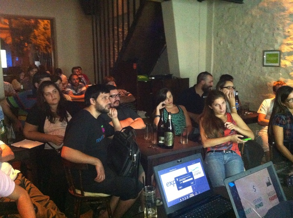

Crónica de un trabajo en equipo
por Ezequiel Clerici
@HacksHackersROS
por Ezequiel Clerici
@HacksHackersROSEl Mapa de Homicidios Dolosos 2013 en la ciudad de Rosario es la primera plataforma digital de periodismo de datos que se desarrolló íntegramente para ser publicada en un medio de prensa local. La plataforma y el mapa son la consecuencia de varios meses de intenso trabajo, intercambio de ideas, información y la construcción de una confianza mutua entre un equipo de periodistas y programadores de Hacks/Hackers Rosario y otro liderado por Hernán Lascano del diario La Capital.
Como todo aquello que se lleva a cabo por vez primera, detrás existe una historia y quienes estuvimos involucrados en este trabajo quisiéramos compartirla con el lector a modo de introducción para luego sí meternos de lleno en el paso a paso de cómo se hizo la plataforma.
Hacks/Hackers (HH) es una organización descentralizada sin fines de lucro ni filiación política, que reúne a periodistas, programadores, diseñadores y emprendedores tecnológicos interesados en el futuro de los medios. Fue creada por Burt Herman (Storify), Rich Gordon y Aron Pilhofer de The New York Times. Su primer encuentro se realizó en San Francisco en noviembre de 2009 y actualmente cuenta con miles de miembros y capítulos activos en ciudades de todo el mundo.
En marzo de 2014 se van a cumplir tres años de un tuit de Mariano Blejman—ex editor de Cultura Digital en Página/12, Knight Fellow ICFJ y miembro fundador de Hacks/Hackers Buenos Aires junto a Guillermo Movia (Mozilla Argentina), Martín Sarsale (Properati) y Cesar Miquel (EasyTech)— en el que desde su cuenta personal en twitter convocaba a periodistas, programadores, diseñadores y emprendedores de todo el país al primer encuentro de Hacks/ Hackers en la ciudad de Buenos Aires (BA).
La consigna era tan simple en su postulado como ambiciosa y difícil de alcanzar: “reiniciar el periodismo” en Argentina. Readaptar la forma en que los periodistas y medios de comunicación trabajamos y contamos nuestras historias en pos de un nuevo y exigente lector-usuario atravesado por Internet—su cultura y formas de operar y producir— que cada día se aleja más de las formas tradicionales de lectura informativa y sus antiguos soportes de consumo.
Hacía esa aventura nos lanzamos un reducido grupo de periodistas y programadores el 28 de abril de 2011 tras asistir al primer meetup de Hacks/Hackers Buenos Aires (HHBA) y que continuamos al día de hoy consolidados en una comunidad que se divide en tres capítulos locales (Buenos Aires, Rosario, Mendoza) y que en su conjunto reúnen a más de 3000 personas en todo el país.
Si bien todavía nos encontramos lejos de lograr el objetivo de máxima, en estos casi tres años de trabajo ininterrumpidos la comunidad ha alcanzado otras metas que resultan igual de importantes.
Entre ellas se cuentan haber hecho visible el concepto de periodismo de datos entre colegas y medios; el desarrollo y apoyo de este tipo de proyectos entre personas de la comunidad hacker local; campañas de financiación a través de empresas y fundaciones; difusión del concepto de software libre, datos abiertos y gobierno abierto; charlas y talleres sobre herramientas tecnológicas para periodistas y programadores y lo más importante de todo: la HHBA Media Party de 2012 y 2013.
Esta mega feria gratuita de tres días, única en Latinoamérica, en sus dos ediciones reunió en un mismo lugar (Ciudad Cultural Konex, CABA) a los principales equipos de noticias interactivas de los grandes medios digitales (New York Times, The Guardian, Boston Globe, ProPublica, NPR, Chicago Tribune) y a las más destacadas figuras y fundaciones (Mozilla Fundation, Knight Foundation y el programa Knight-Mozilla OpenNews; ICFJ, FNPI, World Bank Institute y el GEN entre otros) que apoyan y desarrollan proyectos de innovación en medios de todo el mundo.
El capítulo rosarino de HH comenzó su andar recién a comienzos de 2013 y ya cuenta con diez meetups y 121 miembros activos entre periodistas, programadores, diseñadores y emprendedores tecnológicos. Desde el principio el objetivo fue establecer las condiciones naturales para que se consolide una comunidad de trabajo colaborativo. Y que esto derive en equipos multidisciplinarios que permitan crear herramientas y plataformas libres con fines periodísticos; pero también unidades de negocios PYME que generen dividendos sobre la base de software no privativo y el acceso libre al conocimiento.
La plataforma de mapeo con los homicidios dolosos que se cometieron en la ciudad durante el año 2013 es la consecuencia de una puesta en práctica de las ideas antes mencionadas y el producto de un trabajo en conjunto entre el equipo de Policiales del diario La Capital y Hacks/ Hackers Rosario (HHROS).
Sin el completo dataset que se aportó desde el diario hubiera sido imposible llevar adelante el trabajo de desarrollo. Ese material fue imprescindible ya que representa el corazón mismo de la plataforma y el punto de partida para cualquier proyecto de este tipo.
A continuación les contamos el paso a paso de cómo se realizó la plataforma y cuáles fueron las dificultades con las que tuvimos que lidiar a lo largo de todo el proceso.
Cómo lo hicimos
Desde un punto de vista metodológico se decidió delimitar el mapeo de homicidios dolosos sólo a la ciudad de Rosario. De esta forma se dejó fuera a localidades como Villa Gobernador Gálvez, Granadero Baigorria, Pérez, Ibarlucea y Funes. Esto dio como resultado que en el mapa sólo se referencien los 214 homicidios dolosos cometidos en el territorio de la ciudad y no el total de 257 correspondiente al Departamento Rosario.
El objetivo de ésta decisión fue simplificar el trabajo de normalización y chequeo del dataset aportado por La Capital. De esta forma logramos acortar el tiempo de delimitación manual de comisarías y distritos de Rosario puesto que contábamos con un reducido equipo de personas en función de los días y horas de trabajo disponibles.
Es importante destacar que el equipo de HHROS que llevó adelante la programación de la plataforma, su visualización, normalización y corroboración de datos, realizó estas tareas en su tiempo libre. Por lo que la delimitación resultaba imprescindible para alcanzar el objetivo final. En esta etapa fue determinante haber logrado detectar las fortalezas y debilidades del grupo ya que en proyectos de este tipo es muy común partir de objetivos desmedidamente ambiciosos que luego pueden hacer peligrar el éxito de toda la empresa.
Puntualmente con respecto al dataset lo primero que se hizo fue quitar todos los homicidios cometidos en las localidades ya mencionadas. De está forma quedaron sólo los cometidos en Rosario. Luego se buscó la noticia de cada asesinato a través del buscador y archivo digital del diario, con un éxito del 89%. Esto indica una cobertura casi perfecta de los hechos de sangre que se cometen en el Departamento Rosario y un registro de datos puntilloso y de lo más completo por parte del equipo de Policiales del diario La Capital.
Los links a las noticias de las muertes sirvieron para contrastar información imprescindible para la georeferenciación que luego tendría cada hecho en el mapa. También fueron útiles para corroborar edades, nombres completos, comisarías, juzgados y principalmente direcciones. Todos datos e informaciones que queríamos que estuviesen presentes en la plataforma final.
Para evitar dolores de cabeza era necesario obtener direcciones precisas. Y el problema era que un número importante referían a la intersección de dos calles (“Ezeiza y Filiberto”, “Rueda y Pascual Rosas”, etc.), espacios recreativos (“Piletas del Saladillo”) o verdes (“Parque Independencia”). Esto hacía imposible una localización precisa por lo que en un gran número de casos fue necesario ir a la noticia y hacer una lectura rápida en busca de mayores precisiones. Este trabajo artesanal permitió, en la mayoría de casos, una geolocalización exacta y en otros, una aproximada, de los crímenes.
Pese a estos recaudos hubo que agregar columnas de información al dataset original para lograr georeferenciar cada hecho sin problema. El excel original albergaba 8 columnas: número del homicidio, fecha del deceso, nombre de la víctima, edad, dirección aproximada, tipo de arma y motivo; comisaría y juzgado. Y se les sumó tres nuevas: dirección exacta; ciudad, provincia, país; y distrito. Con esto se subsano el problema de referenciación y se logró mapear los 214 homicidios dolosos.
El mapa que usamos para la plataforma es una versión gratuita de CartoDB que permite trabajar hasta 5 tablas o capas de información. Las tres principales corresponden a los distritos, comisarías y el propio dataset. Las dos restantes corresponden puntualmente al mapa.
La delimitación espacial de las 29 comisarías y los seis distritos administrativos en los que se divide la ciudad, se realizaron de forma manual. La información de referencia que se usó para este fin se tomó del sitio oficial de la Municipalidad de Rosario.
Los árboles detrás del bosque
Desde hace por lo menos dos años la noticia se repite a diario como un mantra: “Un joven de 16 años fue hallado muerto con dos disparos en el pecho y uno en la cabeza”, “...dos personas arriba de una moto lo interceptaron camino a su casa y abrieron fuego sin mediar palabras”; “la víctima de tan sólo 21 años fue ejecutada con un arma calibre 9 milímetros a plena luz del día…”.
Inclusive las características son a menudo bastante similares. Víctimas en edad de secundario o joven adulto en condiciones físicas óptimas para el trabajo. Asesinados con armas de fuego calibre 9 mm, 11.45 y 22 a distancias cortas. Sólo en contadas ocasiones, él o los agresores, se hacen con las pertenencias de valor de la víctima. Los ataques se cometen sin importar hora o lugar aunque lo más común es que se sucedan en barrios pobres de la ciudad de Rosario y sus alrededores. Y pareciera que todos se rigen con una misma regla: no suele haber disparos al azar o intimidatorios… se tira a matar.
Todos los días uno puede abrir la edición online de cualquier diario local y encontrarse con un panorama como el que acaba de ser descripto. A tal punto es así que en los 365 días que tuvo el 2013 se asesinaron, en forma dolosa (con intención), a 214 personas sólo en la ciudad de Rosario (un promedio de 1,6 por día). En su mayoría hombres jóvenes, menores de 35 años, muertos por armas de fuego y sin otra motivación aparente que el sólo hecho de borrarlos de la faz de la tierra.
El espiral de violencia y muerte ha llegado a tal punto que los rosarinos prácticamente hemos naturalizado el ritmo creciente de homicidios interanual que padece la ciudad. Las cifras en esta materia son elocuentes: en 2011, en Rosario, asesinaron en forma dolosa a 130 personas. En 2012 el número ascendió a 154 (+15%) y en el 2013, como ya se dijo, trepó a 214 (+28%).
Si bien el análisis cuantitativo de esta situación es valido y sirve para dimensionar el bosque —de hecho el fin en sí mismo de la plataforma fue alcanzar tal objetivo—, tiene como contrapartida que no permite observar con detalle algunos árboles que lo conforman. Y es en este punto en el que nos gustaría detenernos y aportar otro tipo de reflexión a partir de las cifras objetivas.
De los 214 homicidios dolosos que se cometieron en 2013, 30 corresponden a menores de 18 años (14%). En su mayoría personas en edad de secundario: niños y adolescentes que van de los 13 a los 17 años. Personas que se encontraban en su etapa de maduración, en tránsito hacia la adultez. Chicos a los que recién ahora les debería haber estado creciendo vello en las piernas. En muchos casos con cuerpos aún en desarrollo y con—seguramente—varios a las puteadas por problemas de acné propios de la edad. A prácticamente todos, la vida les fue extirpada del cuerpo a través de un eficiente y letal intermediario: una bala calibre 9 mm.
En tres de los 30 homicidios que involucran menores, el móvil está relacionado a un robo o intento. Son los casos de Mia Valenzuela (4), asesinada de un mazazo en la vivienda familiar; Emanuel Ramos (17) muerto apuñalado al resistirse; y Gonzalo Bai (17), padre de dos criaturas, quien recibió cuatro disparos cuando intentaba robar un autoservicio en barrio Belgrano. En ese atraco frustrado lo que se sí se alcanzó a robar Gonzalo fue la vida de Romeo Traversa (86). El resto se completa con: motivos interpersonales (6), causa dudosa (6), ajuste de cuentas (3), bala policial (4), enfrentamiento entre bandas (2), tiroteo (1), venganza (1), discusión entre vecinos (1), riña (1), filicidio (1), frente de casa acribillado (1).
En cuanto al total de homicidios dolosos en ocasión de robo en 2013, la suma da como resultado 27. De los cuales 18 fueron con arma de fuego y el resto se dividen entre objeto contundente (OC) y arma blanca (AB). Otro dato relevante es que la mayoría de los hechos se dieron en zonas alejadas del domo o centro de la ciudad (3). Los puntos calientes fueron barrios humildes de los distritos Oeste (9) y Sudoeste (6) y las víctimas personas pobres o de clase media baja.
De todos los hechos policiales que cubrió el diario La Capital en el 2013 (89% del total), las crónicas dan cuenta de 56 homicidios en los que se establece con claridad que los victimarios dieron muerte a sus víctimas aplicando la modalidad de asesinato con arma de fuego desde arriba de una moto.
En la inmensa mayoría de los casos relacionados con menores, la muerte se produjo por arma de fuego: 25 sobre 30. Los cinco restantes se reparten entre OC (2), AB (2) y trauma grave (1). Si retomamos el número total de homicidios (214), sin distinción de edades, vamos a observar que 165 (77,1%) fueron cometidos con armas de fuego. Esto supone un acceso a dichas armas (por vía de la compra o alquiler) y su munición relativamente fácil para el victimario. Algo que no pareciera ser común en el mercado legal de armamento para uso civil de Argentina.
Actualmente si se quiere acceder a un arma de fuego por primera vez, el comprador deberá sortear un abultado tramiterio burocrático a través del Renar que incluye: ser mayor de 21 años, presentarse con DNI, establecer un domicilio de guarda de la/s arma/s, no poseer antecedentes penales, acreditar medio de vida lícito (recibo de sueldo, monotributo, etc), certificado de aptitud psicofísico y dar cuenta de idoneidad en el manejo de armas de fuego.
Todo el proceso tiene un costo de $350 y una demora de entre 30 y 40 días para que los papeles viajen al Renar en Buenos Aires, sean evaluados, aprobados—si es que son aprobados—y vuelvan a la armería desde donde se realizó la compra en forma de credencial de legítimo usuario. Una vez sorteado todo esto, el arma deberá quedar en guarda del vendedor por otros dos meses y recién ahí el comprador puede llevarla a su casa. Luego para adquirir munición siempre deberá presentar su credencial habilitante.
Cuesta trabajo imaginar que de los 165 homicidios dolosos que se cometieron en 2013, un porcentaje elevado hayan sido perpetrados por legítimos usuarios en posesión de armas y munición registrada. Si hacemos un repaso por el dataset los únicos homicidios en los que podemos certificar que hubo armas y munición legal son los 13 en donde actuaron fuerzas de seguridad y un caso de robo en el que el propietario del arma hizo entrega de la misma a la policía tras repeler el atraco del que fue víctima. En total: 14 episodios de 165 (el 8,5%).
Esto lo que demuestra es que el negocio de venta y alquiler de armas y munición ilegal goza de enorme salud y prosperidad en la ciudad de Rosario. Un dato a tener en cuenta por el Ministerio de Justicia y Seguridad de la Nación, Gobierno de Santa Fe, Estado municipal y Policía provincial.
Todos estos datos y afirmaciones están a disposición del lector para ser descargados chequeados y contrastados en el dataset que utilizamos para el desarrollo del Mapa de Homicidios Dolosos Rosario 2013. Lo mismo con el código fuente que desarrollamos para crear la plataforma. El mismo lo pueden forkear de GitHub y reutilizarlo en función de sus proyectos.